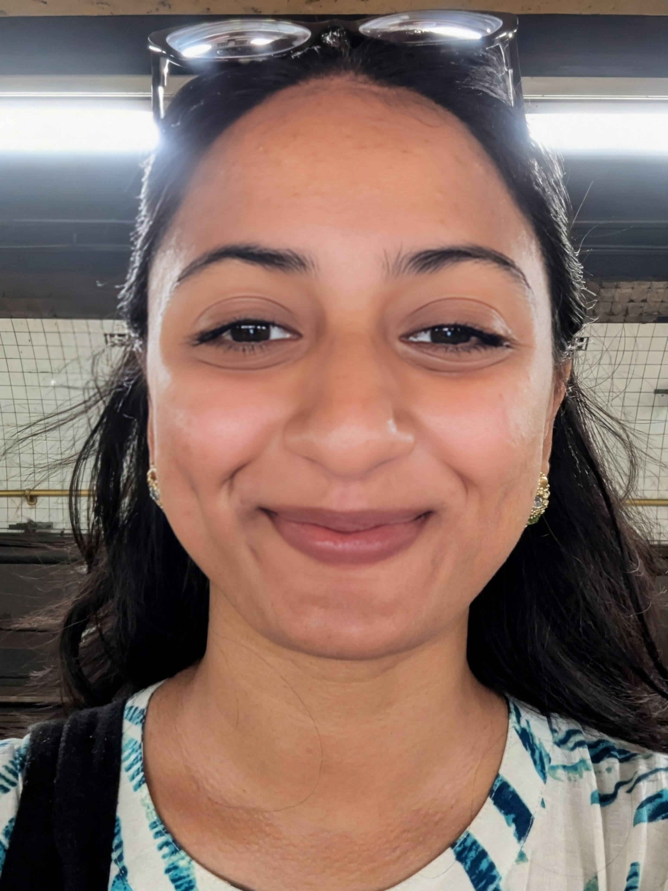

Rahma Simin Ali
Machine Learning & LLM Researcher
About Me
I am a machine learning and language-model researcher working on multilingual and low-resource NLP, language-model reasoning and evaluation, and trustworthy and efficient LLMs.
My current research investigates how reasoning supervision, multilingual variation, code-mixing, cultural localization, and input perturbations affect the reliability and robustness of language models. I am especially interested in controlled evaluation methods that go beyond final-answer accuracy.
I also bring more than two years of software-engineering experience across backend systems, data pipelines, cloud infrastructure, automated testing, CI/CD, and production reliability.
Education
Chittagong University of Engineering and Technology (CUET), Bangladesh
- GPA: 3.74 / 4.00 (last four semesters: 3.85 / 4.00)
- Merit position: 13th out of 126
- Advisor: Dr. Asaduzzaman
- Thesis: ReTSoSPA: IoT-based Real Time Soil Sensing for Precision Agriculture
Publications & Preprints
Preprint
- Ali, R.S. and Hossain, J. (2026). MathShikkha: A Controlled Study of Answer-Only and Chain-of-Thought Supervision for Bangla Mathematical Reasoning in Small Language Models . arXiv:2608.08503 [cs.AI].
Peer-Reviewed Publications
- Chowdhury, M., Ali, R.S., Shah, M.A.B., Ilman, R., Uddin, M.K. and Sadika, A.H. (2025). Lifeline: A Traffic and Road Safety Assistant System . ICECIT 2025, IEEE.
- Ali, R.S. and Asaduzzaman, A. (2024). ReTSoSPA: IoT-based Real Time Soil Sensing for Precision Agriculture . 27th ICCIT, pp. 1152–1157, IEEE.
- Hossain, M.S., Mondal, S., Ali, R.S. and Hasan, M. (2020). Optimizing Complexity of Quick Sort . ICCSCS, pp. 329–339, Springer.
Selected Research Projects
Filter by research area.
MathShikkha
Controlled study of answer-only versus teacher-generated Bangla Chain-of-Thought supervision. Built a 1,436-example Bangla mathematical-reasoning dataset and fine-tuned four 4B–7B models with QLoRA and response-only loss masking.
M2CL-AgentBench
Developing a multilingual, multi-domain, culturally localized, and stress-tested benchmark for agentic reasoning across English, Bangla, and English–Bangla code-mixed inputs.
BanglaReason-Stress & MARS-C
Developing diagnostic stress tests for distractors, perturbations, code-mixing, and translation noise, together with an adaptive reasoning strategy that conditions reasoning and tool use on language, domain, culture, and task requirements.
Lifeline: Traffic & Road Safety Assistant
Smartphone-based traffic and road-safety assistance research involving intelligent transportation, mobile sensing, and cyber-physical decision support.
ReTSoSPA
Low-power wireless precision-agriculture system integrating NRF24L01 communication, an ESP32 gateway, sensor calibration, real-time monitoring, and ML-assisted decision support.
Telemetry-Driven RAN Digital Twins
Investigated next-generation network optimization with digital twins, focusing on how noisy and incomplete telemetry affects network-state estimation and control decisions.
Research & Teaching Experience
- Conduct research on intelligent transportation, road-safety systems, mobile sensing, and cyber-physical decision support.
- Co-authored Lifeline: A Traffic and Road Safety Assistant System (ICECIT 2025), developing a smartphone-based traffic and road-safety assistance system.
- Currently extending MathShikkha under Dr. Chowdhury’s guidance, exploring the cybersecurity domain, vision-language models (VLMs), and explainable reasoning.
- Developed ReTSoSPA: IoT-based Real Time Soil Sensing for Precision Agriculture , a low-power wireless precision-agriculture system published at ICCIT 2024.
- Investigated telemetry-driven RAN digital twins for next-generation network optimization, studying the effects of noisy and incomplete telemetry on network-state estimation and control decisions.
- Conducted collaborative NLP and applied machine-learning research involving dataset preparation, model evaluation, statistical analysis, and research writing.
Professional Experience
- Designed production backend services and data pipelines with role-based access control, multi-tenant permissions, reliability-focused data access, and fault-tolerant processing.
- Built and maintained production data pipelines with emphasis on consistency, recoverability, scalability, and fault tolerance under real workloads.
- Improved system performance and deployment reliability through database optimization, automated testing, CI/CD, and AWS infrastructure.
- Diagnosed database-query and latency bottlenecks and strengthened software robustness through automated testing, CI/CD, and regression-risk analysis.
- Worked with Ruby on Rails, Sidekiq, Redis, PostgreSQL, AWS EC2/Lambda, Git, and production deployment pipelines.
- Built backend web components using Django and PostgreSQL and gained exposure to cloud infrastructure, virtualization, and large-scale deployment environments.
Technical Skills
Machine Learning & LLMs
PyTorch, Hugging Face Transformers, QLoRA/LoRA, supervised fine-tuning, reasoning distillation, small language models
NLP & Evaluation
Bangla NLP, multilingual and low-resource NLP, teacher–student learning, reasoning evaluation, human evaluation, contamination auditing
Research & Statistical Methods
Experimental design, paired bootstrap confidence intervals, McNemar tests, robustness analysis
Programming & Backend
Python, Ruby on Rails, Laravel, Django, PostgreSQL, MySQL, Redis
Cloud & Systems
AWS EC2/S3/Lambda, Docker, Git, CI/CD, production reliability
IoT & Cyber-Physical Systems
ESP32, NRF24L01, wireless sensing, telemetry-driven systems, real-time monitoring
Honors & Achievements
- Ranked 13th out of 126 students in the Department of Computer Science and Engineering, CUET.
- Awarded a full merit-based undergraduate scholarship through competitive national engineering entrance examinations in Bangladesh.
- Appointed Research Sub-Coordinator, CUET Computer Club, in recognition of research leadership and academic contributions.
- Selected to participate in the National Girls’ Programming Contest.
Leadership & Service
- Research Sub-Coordinator, CUET Computer Club — organized research seminars, workshops, coding competitions, and supported undergraduate research engagement.
- Organized a coding competition with 200+ participants during CUET CSE FEST, coordinating problem design, evaluation, and event logistics.
- Conducted tutoring sessions in mathematics, physics, and chemistry for undergraduate students.
Contact
I am happy to connect about research collaborations, graduate research opportunities, and work related to multilingual NLP, LLM reasoning, and trustworthy AI.
Email:
rahmasimin@gmail.com
Website:
upoma1998.github.io/rahmasimin.github.io/